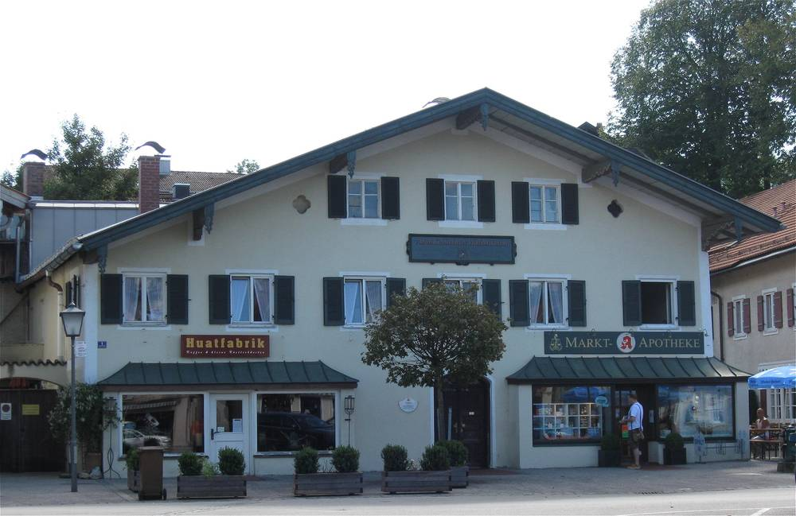

독일 바이에른 오버란트 시민재단 20년…군 지원금 1유로를 18유로 일로 키웠지만 "2035년 재생에너지 100%까지는 갈 길 멀다"

미스바흐군 전기는 재생에너지 60%, 난방 25%·수송 7%에 그쳐…해마다 에너지 비용 4억9,500만 유로 중 3억500만 유로가 지역 밖으로
독일 바이에른주 남부 4개 군이 함께 세운 시민재단 '에너지전환 오버란트(Ewo)'가 출범 20년을 맞아 미스바흐 군의회에 활동 보고서를 냈다. 재단은 2035년까지 오버란트 지역 에너지를 재생에너지로 100% 채운다는 목표를 내걸고 있지만, 2023년 기준 미스바흐군의 재생에너지 비율은 전기 60%에 견줘 난방 25%, 수송 7%에 머물렀다. 미스바흐군이 해마다 에너지에 쓰는 돈은 4억9,500만 유로이며, 이 가운데 경유·휘발유·가스·난방유에 들어가는 3억500만 유로가 지역 밖으로 빠져나간다. 4개 군 전체의 에너지 비용은 19억 유로에 이른다. 274명이 출연한 재단은 직원 14명으로 지자체 열 공급 계획, 공공건물 개보수, 주민 태양광·열펌프 상담 등을 맡고 있다. 재단은 군에서 해마다 받는 6만 유로를 바탕으로 유럽연합·연방 지원금과 자체 수입을 모아 연 107만 유로의 사업을 벌이고 있으며, 2021~2025년에만 지원금 약 220만 유로를 끌어왔다고 밝혔다.
시민에너지 관점
군 예산 1유로가 시민재단을 거쳐 18유로의 일로 불어난다는 오버란트의 계산은, 지역 에너지 전환에서 시민 조직이 얼마나 값싼 '엔진'인지 보여 준다. 우리 지자체들도 해마다 수천억 원의 에너지 비용이 지역 밖으로 빠져나가지만, 이를 셈하고 줄일 시민 조직에 꾸준히 예산을 주는 곳은 드물다. "보조금만 쓰는 단체가 될 것"이라는 걱정은 오버란트처럼 성과를 숫자로 의회에 보고하게 하면 덜 수 있다. 시·군마다 주민이 출연하고 지자체가 기본 운영비를 대는 지역 에너지 시민재단을 세워, 새는 돈을 지역 소득으로 바꾸는 일을 시작해야 한다.
출처: Merkur(Miesbacher Merkur) 2026-11-11 Dieter Dorby 원문 보기
独バイエルン・オーバーラントの市民財団20年…郡の補助1ユーロを18ユーロの事業に、それでも「2035年再エネ100%への道は遠い」
ミースバッハ郡の再エネ比率は電力60%、熱25%・交通7%にとどまる…年間エネルギー費4億9,500万ユーロのうち3億500万ユーロが地域外へ
ドイツ・バイエルン州南部の4郡がともに設けた市民財団「エネルギー転換オーバーラント（Ewo）」が設立20年を迎え、ミースバッハ郡議会に活動報告書を提出した。財団は2035年までにオーバーラント地域のエネルギーを再生可能エネルギーで100%まかなう目標を掲げるが、2023年時点のミースバッハ郡の再エネ比率は電力の60%に対し、熱は25%、交通は7%にとどまった。ミースバッハ郡が毎年エネルギーに支出する額は4億9,500万ユーロで、そのうち軽油・ガソリン・ガス・灯油に充てる3億500万ユーロが地域外に流出している。4郡全体のエネルギー費は19億ユーロに達する。274人が出えんした財団は職員14人で、自治体の熱供給計画、公共建物の改修、住民向けの太陽光・ヒートポンプ相談などを担う。財団は郡から毎年受け取る6万ユーロをもとに、EU・連邦の補助金や自主財源を集めて年107万ユーロの事業を行っており、2021～2025年だけで約220万ユーロの補助金を獲得したと明らかにした。
市民エネルギーの視点
郡予算の1ユーロが市民財団を通じて18ユーロの事業に膨らむというオーバーラントの計算は、地域のエネルギー転換で市民組織がいかに安上がりな「エンジン」かを示している。韓国の自治体でも毎年数千億ウォンのエネルギー費が地域外へ流れ出ているが、それを数え、減らす市民組織に継続して予算を出すところはまれだ。「補助金を使うだけの団体になる」という懸念は、オーバーラントのように成果を数字で議会に報告させれば和らげられる。市・郡ごとに住民が出えんし自治体が基本運営費を出す地域エネルギー市民財団をつくり、漏れ出るお金を地域の所得に変える取り組みを始めるべきだ。
出典: Merkur(Miesbacher Merkur) 2026-11-11 Dieter Dorby 原文を読む
德国巴伐利亚奥伯兰公民基金会20年：县里1欧元变成18欧元的事业，但"2035年可再生能源100%仍路途遥远"
米斯巴赫县电力可再生比例60%，供热仅25%、交通7%…每年4.95亿欧元能源支出中有3.05亿欧元流出本地
由德国巴伐利亚州南部4个县共同设立的公民基金会"奥伯兰能源转型"（Ewo）迎来成立20周年，向米斯巴赫县议会提交了工作报告。基金会的目标是到2035年让奥伯兰地区的能源100%来自可再生能源，但截至2023年，米斯巴赫县可再生能源在电力中的比例为60%，而在供热中仅为25%，在交通中仅为7%。米斯巴赫县每年在能源上的支出为4.95亿欧元，其中用于柴油、汽油、天然气和取暖油的3.05亿欧元流出本地；4个县的能源支出合计达19亿欧元。基金会由274人出资设立，有14名员工，负责地方供热规划、公共建筑改造以及面向居民的光伏和热泵咨询等。基金会表示，以县里每年拨付的6万欧元为基础，汇集欧盟和联邦补助及自有收入，每年开展107万欧元的业务，仅2021至2025年就争取到约220万欧元补助。
市民能源视角
县预算的1欧元经公民基金会放大为18欧元的事业，奥伯兰的这笔账说明，公民组织是地方能源转型中多么划算的"引擎"。韩国地方政府每年也有数千亿韩元的能源支出流出本地，却很少有地方持续拨款给能核算并减少这些外流的公民组织。至于"只会花补贴的团体"的担忧，只要像奥伯兰那样让其向议会用数字报告成果即可缓解。韩国各市郡应设立由居民出资、地方政府承担基本运营费的地方能源公民基金会，开始把外流的钱变成本地收入。
来源: Merkur(Miesbacher Merkur) 2026-11-11 Dieter Dorby 查看原文
Bavaria's Oberland Citizens' Foundation at 20: Turning Each County Euro Into 18 Euros of Work, Yet "Still Far From 100% Renewables by 2035"
Miesbach county gets 60% of its electricity from renewables but only 25% of heat and 7% of transport; €305 million of its €495 million annual energy bill leaves the region
Energiewende Oberland (Ewo), a citizens' foundation set up jointly by four counties in southern Bavaria, Germany, presented its activity report to the Miesbach county council as it marks its 20th anniversary. The foundation aims to meet all of the Oberland region's energy needs from renewables by 2035, but in 2023 renewables supplied 60% of Miesbach county's electricity and only 25% of its heat and 7% of its transport. The county spends 495 million euros a year on energy, of which 305 million euros for diesel, petrol, gas and heating oil leaves the region; energy spending across the four counties totals 1.9 billion euros. Funded by 274 founding donors, the foundation has 14 staff who work on municipal heat planning, renovation of public buildings and advice to residents on solar panels and heat pumps. It says it builds on the 60,000 euros it receives from the county each year, adding EU and federal funding and its own income to run 1.07 million euros of work annually, and that it secured about 2.2 million euros in grants in 2021–2025 alone.
Citizen Energy View
Oberland's calculation that one euro of county money becomes 18 euros of work through a citizens' foundation shows how cheap an engine civic organisations are for local energy transition. Korean local governments also see hundreds of billions of won in energy spending flow out of their areas every year, yet few give steady funding to civic groups that can measure and cut that outflow. Fears that such a group would merely spend subsidies can be eased, as in Oberland, by requiring it to report results to the council in numbers. Every Korean city and county should set up a local energy citizens' foundation, endowed by residents with core running costs from the local authority, and start turning leaking money into local income.
Source: Merkur(Miesbacher Merkur) 2026-11-11 Dieter Dorby Read the original